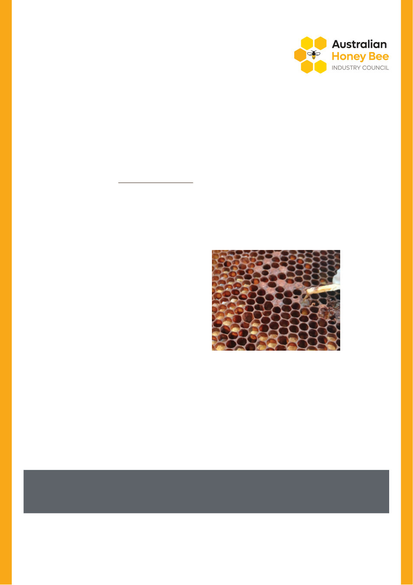

VAA AUSTRALIAN BEE JOURNAL | VOL. 109 No. 09 September 2026 | 23
Spring is one of the busiest times in the apiary. Colonies are
expanding rapidly, brood nests are growing and management
activities are ramping up. While colonies may appear healthy and
productive, hidden problems can also emerge, particularly American
foulbrood disease (AFB), caused by the bacterium, Paenibacillus
larvae. However, AFB doesn’t always present in the textbook way
many beekeepers expect. Knowing what to look for and carrying out
thorough brood inspections in spring can make all the difference to
detecting AFB before it spreads.
Best practice, as outlined in the Biosecurity Code of Practice, is
to conduct detailed brood inspections at least three times a year:
spring, summer and autumn. Spring inspections are particularly
important because they often provide the first opportunity to
detect AFB following winter.
Spring doesn’t cause AFB infections. However, seasonal changes
in colony behaviour and increased management activities can make
previously hidden infections more obvious and increase the risk of
disease spreading within an apiary.
If AFB spores are present in a colony’s honey or pollen stores,
the rapid increase in brood rearing during spring increases the
likelihood they will be fed to young larvae. Research shows as
little as 6–10 spores may be sufficient to infect a one-day-old larva.
As nurse bees feed larvae and clean brood cells, they can
inadvertently distribute spores more widely through the brood nest.
Spring can also bring periods of nutritional stress due to variable
weather, interrupted nectar flows or limited forage, particularly as
colonies rapidly expand. Weakened colonies are more vulnerable
to robbing, one of the main ways AFB spreads between hives.
Increased bee traffic and drifting within apiaries can create
additional opportunities for disease transmission.
Beekeeper activity
“You can’t find what you don’t look for.”
Brood inspections are often limited over winter, so spring may
be the first thorough inspection carried out in several months.
As a result, many cases of AFB are first detected during spring
inspections. Spring management activities such as colony splitting,
honey harvesting and transferring frames can also spread AFB if
good biosecurity practices aren’t followed.
Don’t be surprised by AFB this spring
Shannon Holt, Bee Biosecurity Officer, Western Australia (DPIRD WA)
Spring is one of the busiest times in the apiary.
Ropiness is a useful field diagnostic because no other brood
disease produces the same characteristic rope. It occurs only during
a specific stage of larval decomposition, when diseased brood
breaks down into a sticky, glue-like mass.
To perform the test, insert a matchstick into a suspect cell, stir
gently, then slowly withdraw it. If the brown larval remains stretch
into a smooth rope approximately 3–5 cm long, AFB is confirmed.
There is only a limited period during which infected larvae
will rope:
• Too early: the larva has not yet reached the ropey stage
(commonly less than 8–12 days post-infection*)
• Too late: the larval remains have dried into a hard scale
(commonly more than 3–4 weeks after infection*)
*Disease progression also depends on the age of the larva
at infection, spore dose and AFB strain.
If you suspect AFB, even if larval remains are not roping:
• Look for other symptoms described above
• Examine multiple cells, as some may be at a different stage
of infection and more likely to rope
• Recheck suspect frames for ropiness several days later
• Isolate the hive and reduce the entrance to minimise robbing
• Avoid moving equipment between colonies
• Clean tools and hands or gloves before working other hives
• Contact DPIRD for assistance with sample collection and
laboratory testing.
AFB roping – photo credit DPIRD
If AFB is confirmed, either through visual diagnosis or laboratory testing, the affected hive must be euthanised
and all associated equipment destroyed or appropriately sterilised. AFB is a declared and reportable disease,
and all detections must be reported to DPIRD as soon as practicable.
Spring build-up…or hidden trouble?
Why spring reveals what winter hides
Colony dynamics
What if you suspect AFB but it doesn’t rope?
A negative ropiness test does not rule out AFB.